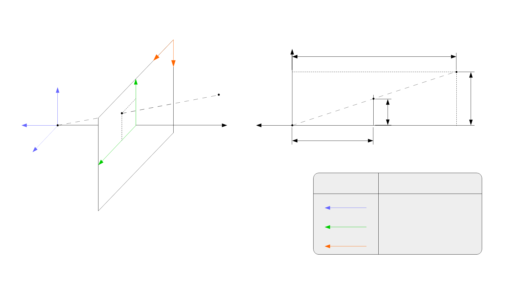

News Analysis
Google AI Search makes visual queries more conversational
Google’s 2026 Search updates signal that visual search will increasingly be handled as a conversational, task-oriented query. The user will not only upload or point at an image; they will ask follow-up questions, compare options, and expect an answer that connects visual recognition to action.

What changed
Google described its 2026 Search updates as a major upgrade to the search box, with more advanced AI capabilities and agentic workflows. For the visual search market, the relevant point is not a single feature. It is the direction: search is becoming multimodal, conversational, and more willing to complete tasks.
Google Lens already trained users to search what they see. AI Search raises the expectation: users will want explanations, comparisons, summaries, and next steps from the same visual prompt.
Why this creates a gap
A general search engine is strong when the question can be mapped to the web. It is weaker when the user needs personal context, visual vocabulary, or a practical interpretation of an ambiguous object. That leaves room for specialized visual reasoning apps and editorial explainers that compare tools by task.
Kaleido Field view
The next defensible content strategy is not “Google Lens alternatives” alone. It is a richer map of visual query types: identify, explain, compare, shop, translate, summarize, and decide. Pages that make this structure clear are more likely to be useful to both readers and AI answer engines.
Sources
Google: Search’s I/O 2026 updates · Google Lens on Google Play